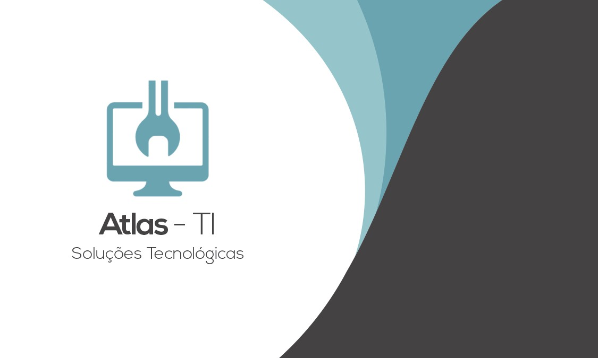

Transformamos desafios tecnológicos em soluções reais. Seja infraestrutura, automação ou desenvolvimento, aqui tem inovação de verdade.
Vamos conversar sobre como podemos ajudar seu negócio a evoluir tecnologicamente.